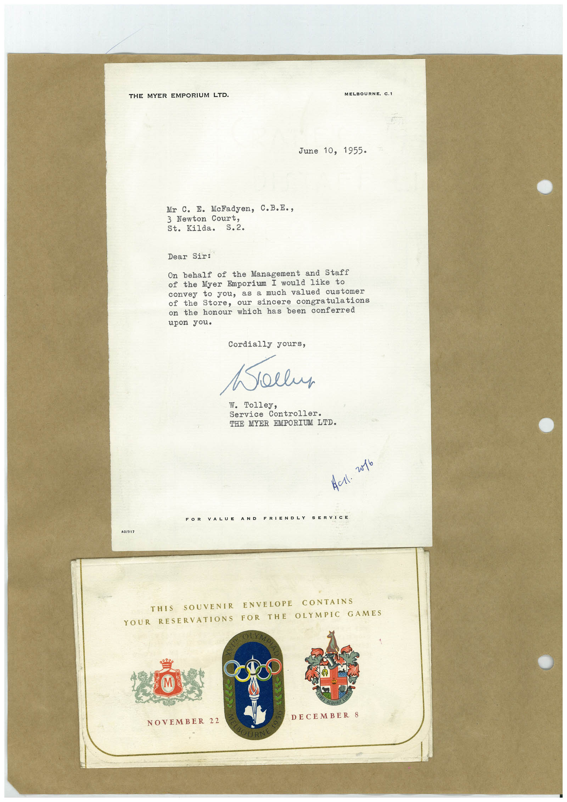

Book 1 · scan 151


Description
Transcription
Context
Review notes
Compare the machine draft with the scan. Handwriting and names need human review.
Artifacts
Edit the artifacts field in this note’s frontmatter to change these records. This summary is generated.
B01-S151-A01 — Letter & Greeting card — Book 1, scan 151
Types: Typed document, Letter, Greeting card
Scope: Whole scanned page; individual items can be split out during review.
Caption: Not mapped yet.
Caption source: Not recorded yet.
Caption status: unmapped
Machine transcription
THE MYER EMPORIUM LTD. MELBOURNE. C.1 June 10, 1955• Mr C. E. McFadyen, C.B.E., 3 Newton Court, St. Kilda. S.2. Dear Sir: On behalf of the Management and Staff of the Myer Emporium I would like to to you, as a much valued customer Store, our sincere congratulations on the honour which has been conferred upon you. Cordially yours, Kollus W. Tolley, Service Controller. THE MYER EMPORIUM LTD. Aul. v016 FOR LY AO/317 THIS SOUVENIR ENVELOPE CONTAINS YOUR RESERVATIONS FOR THE OLYMPIC GAMES DECEMBER 8 NOVEMBER